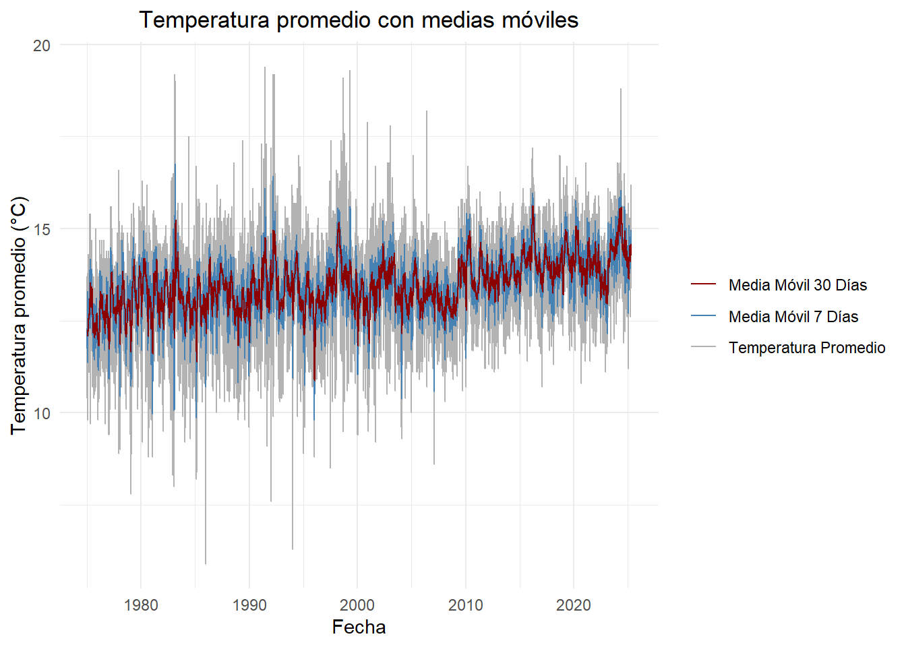
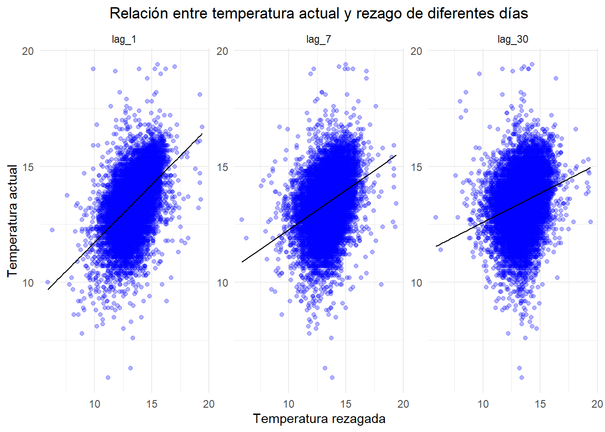
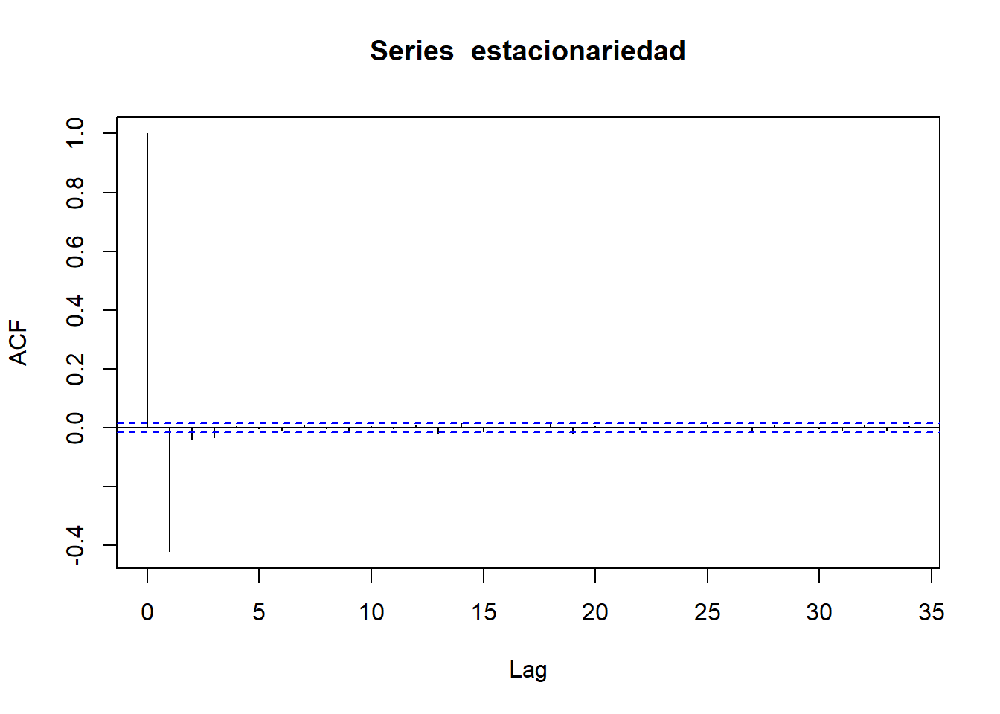

Capítulo: 2 Entregable 2
En este momento deberemos retomar la Unidad 1 en la cual se creó un minilibro que contiene el entregable de dicha unidad. Este documento tiene como repositorio GitHub (elaborado desde Markdown). Ahora, en esta Unidad 2, se debe continuar con los datos presentados en dicho entregable y se debe evidenciar, en una de las variables en el tiempo, la aproximación en promedio móvil, en rezagos y en estacionalidad. Todo lo anterior, a través de funciones y gráficas que permitan detectar patrones y ciclos de la variable.
En primer lugar, se identifica la ventana temporal de las temperaturas registradas por este sensor, la cual comprende datos diarios desde el 1 de enero de 1975 hasta el 31 de marzo de 2025. No obstante, es importante señalar que el conjunto de datos incluye observaciones que se remontan hasta el año 1941, lo que proporciona una perspectiva histórica amplia. Sin embargo, diversos análisis indican que la calidad y confiabilidad de los registros mejora significativamente a partir de 1972, debido a que en los periodos anteriores se observa una alta frecuencia de valores atípicos y anomalías que podrían comprometer la precisión de cualquier análisis basado en dichas observaciones. Por esta razón, los datos previos a 1972 suelen utilizarse con precaución o ser excluidos de los estudios que requieren alta fiabilidad en las series temporales [9].
Teniendo en cuenta lo anterior, se realizaran distintos análisis temporales de la temperatura promedio de la ciudad de Bogotá. Para ello, se aplicarán técnicas de suavizamiento mediante el cálculo de promedios móviles, así como análisis de rezagos y de estacionalidad. Estas aproximaciones permitirán identificar y representar patrones, tendencias y ciclos a lo largo del tiempo, utilizando funciones estadísticas y gráficas que faciliten la interpretación visual y analítica del comportamiento de la variable.
En primer lugar se carga y verifica el tipo de datos del conjunto de datos seleccionado, garantizando que la fecha esté en formato correcto.
En el siguiente enlace se puede apreciar el proceso de extracción mediante las API de meteostat y Openmeteo en Python.
Notebook de descarga de datos en GitHub
2.1 Promedios móviles (SMA de 7 y 30 días)
Code
library(tidyr)
library(dplyr)
library(knitr)
library(kableExtra)
datos_filtrados <- datos_filtrados %>%
mutate(
sma_7 = rollmean(tavg, k = 30, fill = NA, align = "right"),
sma_30 = rollmean(tavg, k = 360 , fill = NA, align = "right")
)
ggplot(datos_filtrados, aes(x = fecha)) +
geom_line(aes(y = tavg), color = "gray70") +
geom_line(aes(y = sma_7), color = "steelblue", size = 1) +
geom_line(aes(y = sma_30), color = "darkred", size = 1) +
labs(title = "Temperatura promedio con medias móviles",
x = "Fecha", y = "Temperatura promedio (°C)") +
theme_minimal()
2.2 Rezagos (lags de 1 y 7 días)
Code
datos_filtrados <- datos_filtrados %>%
mutate(
lag_1 = lag(tavg, 1),
lag_7 = lag(tavg, 7)
)
ggplot(datos_filtrados, aes(x = lag_1, y = tavg)) +
geom_point(alpha = 0.3, color = "purple") +
geom_smooth(method = "lm", se = FALSE, color = "black") +
labs(title = "Relación entre temperatura actual y rezago de 1 día",
x = "Temperatura rezagada (1 día)", y = "Temperatura actual") +
theme_minimal()
2.3 Descomposición STL.
Code
# Imputamos NA para asegurar continuidad
datos_ts <- ts(na.approx(datos_filtrados$tavg, na.rm = FALSE),
frequency = 365,
start = c(year(min(datos_filtrados$fecha)), yday(min(datos_filtrados$fecha))))
# Descomposición STL
descomposicion <- stl(datos_ts, s.window = "periodic")
autoplot(descomposicion) +
labs(title = "Descomposición de la serie de temperatura promedio") +
theme_minimal()